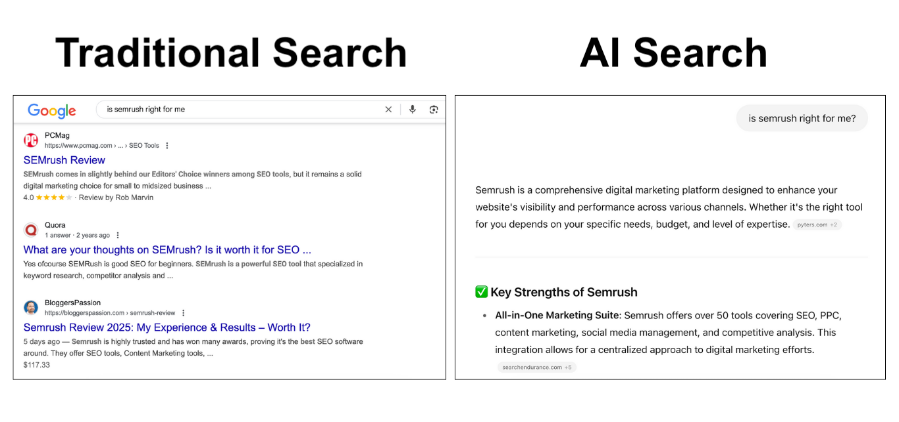

一、中文GEO的核心是被正确相信
中文GEO不只是排名问题。一个品牌即使在某些答案里出现，如果AI描述错误、语气保留、引用来源混乱，用户仍然无法形成信任。
声誉决定AI是否愿意把品牌放进更积极的语境。这里的声誉不是公关口号，而是官网、媒体、社区、百科、榜单、评测和用户讨论共同形成的可验证信息环境。
二、排名和声誉解决的是两个问题
排名解决入口，声誉解决采信。传统搜索里，排名靠前通常意味着更高点击机会；AI搜索里，品牌还要通过相关性、实体清晰度和可信证据的筛选。
如果品牌排名不错，但外部资料稀薄、社区评价混乱、第三方页面过时，AI仍可能选择更容易解释、更少争议的竞争对手。
| 问题 | 排名视角 | 声誉视角 |
|---|---|---|
| 是否出现 | 关注位置和曝光 | 关注语境和准确性 |
| 是否可信 | 依赖页面质量 | 依赖多来源印证 |
| 是否推荐 | 不一定能判断 | 看风险和证据 |
| 优化重点 | 关键词和页面 | 实体、评价和证据链 |
三、中文环境为什么更容易出现声誉偏差

中文信息生态更加分散。用户可能在搜索引擎、内容平台、问答社区、短视频、百科、媒体号和行业网站之间获得品牌印象，AI也可能从不同来源拼接答案。
当这些来源对同一品牌的说法不一致时，AI会倾向于选择更容易合并的解释。企业如果只维护官网，而忽略外部资料，就会把解释权交给别人。
四、声誉信号具体包括什么
声誉信号可以分为四类：品牌自有来源、第三方权威来源、用户讨论来源和结构化资料来源。它们共同回答“这家公司是谁”“它是否可靠”“用户如何评价”。
这些信号不需要都完美，但不能长期互相冲突。AI最怕的是名称相似、业务混乱、旧信息多、新信息少，最后只能生成一个模糊版本的品牌。
- 自有来源：官网、博客、文档、新闻中心和FAQ。
- 第三方来源：媒体报道、榜单、评测、行业文章和合作方页面。
- 用户来源：社区讨论、评价内容、问答记录和真实反馈。
- 结构化来源：百科、Schema、站点地图和公开公司资料。
五、企业最容易误判的三个信号
第一，把出现次数当成声誉。AI多次提到品牌，不代表它用的是正确信息。第二，把单一平台排名当成整体表现。中文AI产品的来源和答案习惯可能不同。
第三，把公关曝光当成信任。没有事实和证据支撑的曝光，可能只会增加噪声。声誉建设的重点，是让关键来源用一致、具体、可核验的方式解释企业。
六、中文GEO声誉该如何治理
治理顺序应从实体一致开始。先统一品牌名称、简称、英文名、产品名、行业类别和核心定义，再处理官网内容、媒体资料、百科信息、社区问答和合作方页面。
之后要关注高风险问题，例如价格、能力边界、服务地区、客户类型、监管资质和竞品比较。这些问题一旦被AI说错，对转化和信任的影响往往比“不出现”更大。
七、结论：中文GEO要争取解释权
中文GEO的长期目标不是制造更多品牌露出，而是让AI在关键问题上形成准确、稳定、可核验的品牌解释。排名能带来入口，声誉才决定AI是否愿意采信。
企业应把官网、媒体、社区和结构化资料放进同一套知识资产管理体系。只有当外部世界能一致地说明你是谁、做什么、凭什么可信，AI才更可能给出正向答案。
参考文献
- Google Search Central：Creating helpful, reliable, people-first content -https://developers.google.com/search/docs/fundamentals/creating-helpful-content
- Google Search Central：AI features and your website -https://developers.google.com/search/docs/appearance/ai-features
- NIST：AI Risk Management Framework -https://www.nist.gov/itl/ai-risk-management-framework
- Microsoft Learn：RAG and Generative AI in Azure AI Search -https://learn.microsoft.com/en-us/azure/search/retrieval-augmented-generation-overview
- Schema.org：Schema.org vocabulary documentation -https://schema.org/
FAQ
Q1：为什么说中文GEO本质上是声誉问题？
因为AI答案不只判断品牌是否存在，还会判断它是否值得被采用。中文环境里信息来源分散，品牌可能同时被官网、媒体、社区和百科描述。若这些来源互相冲突，AI即使提到品牌，也可能用错误或保留的语气解释它，进而影响用户信任。
Q2：排名高是不是就代表GEO做得好？
不一定。排名代表某个入口位置，但AI答案还会考虑内容是否能回答问题、来源是否可信、品牌是否适合用户场景。一个排名高但证据弱的页面，可能不会进入AI推荐；一个排名不突出但证据清楚的品牌，也可能在细分问题里被采用。
Q3：企业应该先治理官网还是外部声誉？
先治理官网，因为官网是最稳定的品牌语义源。官网把品牌定义、产品边界、案例证据和FAQ写清楚后，再去修正媒体、百科、社区和合作方页面，外部资料才有一致参照。只做外部曝光而官网混乱，会增加AI误读风险，也难以长期复用。
Q4：负面讨论一定会伤害AI可见性吗？
不一定。真实讨论中有批评很正常，关键是信息是否具体、是否被多方印证、品牌是否有清楚回应。完全忽略负面问题，反而可能让AI只看到用户单方叙述。企业可以通过FAQ、说明页和公开回应提供更完整语境，减少片面结论。
Q5：中文GEO声誉监测应该看哪些指标？
至少看品牌是否被提到、描述是否准确、语气是否正向、引用来源是否可信、是否把品牌放进推荐名单，以及是否出现过时或错误信息。不同AI产品和不同问题类型要分开观察，不能用一次回答代表整体声誉，还要保留变化趋势。
Q6：小企业如何建立中文GEO声誉？
小企业可以从细分问题入手。先把官网写清楚，再争取垂直媒体、行业案例、合作方页面和真实用户评价形成一致证据。不要急着覆盖大词，先让AI在小范围问题中准确理解你，逐步积累可验证的外部信号，再扩展到更宽场景。